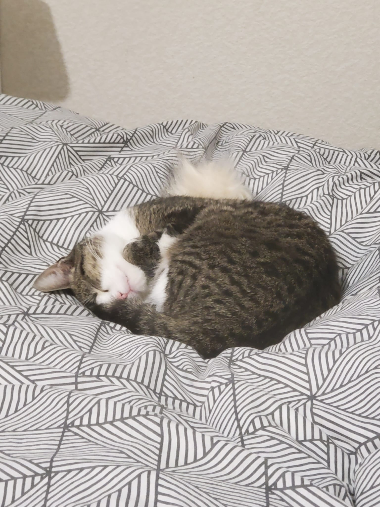

Les chats
Les chats sont des animaux domestiques très appréciés dans le monde entier pour leur beauté et leur caractère indépendant. Ils possèdent une grande agilité, capable de sauter plusieurs fois leur propre hauteur, ce qui en fait des chasseurs naturels. Leur sens de l’équilibre est remarquable, et ils peuvent grimper facilement aux arbres ou sur les meubles. Les chats passent une grande partie de leur journée à se toiletter, utilisant leur langue rugueuse pour nettoyer leur pelage et réguler leur température corporelle. Leur ronronnement, souvent associé à la détente, peut également être un moyen de communication pour exprimer leurs besoins ou leur stress. Certains chats sont très affectueux et aiment se blottir contre leurs propriétaires, apportant réconfort et chaleur. Ils ont un sens de l’ouïe très développé, capable de détecter des sons que les humains ne perçoivent pas. Leur vue nocturne est également exceptionnelle, leur permettant de chasser ou de se déplacer facilement dans l’obscurité. Les chats adorent jouer avec des objets mobiles comme des balles, des ficelles ou des plumes, ce qui stimule leur instinct de chasse et leur intelligence. Leur alimentation doit être adaptée à leur âge et à leur santé pour maintenir un poids idéal et prévenir les maladies. Certains chats développent des liens très forts avec d’autres animaux domestiques ou avec les humains, montrant une grande capacité d’adaptation sociale. Ils utilisent également différents moyens de communication, comme les miaulements, les postures de queue et les frottements contre les objets ou les personnes. Les chats sont connus pour leur curiosité naturelle et aiment explorer de nouveaux environnements, souvent avec prudence mais détermination. Leur présence est souvent apaisante, et ils contribuent à réduire le stress et l’anxiété chez leurs propriétaires. Certains chats ont des comportements très particuliers, comme chasser des insectes ou observer intensément les oiseaux à la fenêtre. Grâce à leur combinaison de beauté, de mystère et de compagnie affectueuse, les chats continuent d’enchanter et de fasciner des millions de foyers à travers le monde. Ils représentent un parfait mélange d’indépendance et d’affection, ce qui les rend uniques parmi les animaux de compagnie.
Sources : ChatGPT
